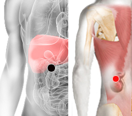

Solitaria
Pares
duodeno - riñones

Generalidades:
La Taenia solium "Solitaria" es un platelminto, gusano plano dividido en segmentos llamados proglótidas; puede llegar a medir 3 a 4 metros. Causante de dos tipos de enfermedades parasitarias, según sea producidas por su fase adulta o por su fase larvaria. Se llama teniasis a la que ocurre por la presencia de sus formas adultas, cuando se alojan en el intestino del huésped definitivo, y cisticercosis a la producida por sus formas larvales, intermedias o juveniles, al afectar a los hospedadores intermediarios (principalmente el cerdo) en sus tejidos u órganos internos. La neurocisticercosis es la infección de las larvas en los tejidos nerviosos que pueden causar múltiples trastornos en humanos.
Nota: La Tenia saginata también es conocida como "Solitaria".
Transmisión:
Por ingerir carne de cerdo contaminada.